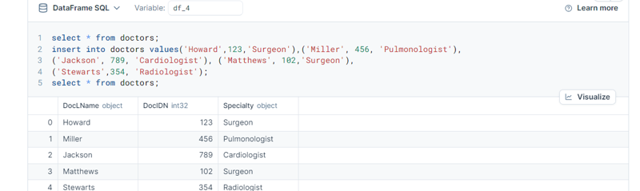

MySQL
Database Design
Relational Database
Healthcare
SQL
Data Modeling
Project Overview
A normalized relational database designed to manage core hospital operations, including patient registration, appointment scheduling, treatment tracking, and billing systems. Built following industry best practices with proper normalization and referential integrity.
🗄️ Database Schema
Core Tables
- Patients: Demographics, contact information, insurance details
- Doctors: Medical staff profiles, specializations, department assignments
- Appointments: Scheduling system with status tracking and notes
- Treatments: Medical procedures and interventions tracking
- Prescriptions: Medication records linked to appointments
- Billing: Financial transactions and insurance claims
- Departments: Hospital organizational structure
- Rooms: Facility management and bed assignments
Sample Query: Patient Appointment History
SELECT
p.FirstName,
p.LastName,
a.AppointmentDate,
d.FirstName AS DoctorFirstName,
d.Specialization
FROM Patients p
JOIN Appointments a ON p.PatientID = a.PatientID
JOIN Doctors d ON a.DoctorID = d.DoctorID
WHERE p.PatientID = 1
ORDER BY a.AppointmentDate DESC;💡 Key Features
- ✅ 3rd Normal Form (3NF) normalization to eliminate data redundancy
- ✅ Referential Integrity enforced through foreign key constraints
- ✅ Optimized Data Types for healthcare-specific data
- ✅ Scalable Architecture supporting complex queries and reporting
- ✅ HIPAA-Compliant Structure with proper data separation
Entity Relationships
- Patients ↔ Appointments: One-to-Many (One patient, many appointments)
- Doctors ↔ Appointments: One-to-Many (One doctor, many appointments)
- Appointments ↔ Treatments: One-to-Many (One appointment, multiple treatments)
- Departments ↔ Doctors: One-to-Many (One department, many doctors)
- Patients ↔ Billing: One-to-Many (One patient, multiple bills)
🎯 Business Use Cases
This database supports critical healthcare operations:
- Patient Management: Track patient demographics, medical history, and visits
- Appointment Scheduling: Manage doctor availability and patient bookings
- Treatment Tracking: Record procedures, medications, and outcomes
- Financial Operations: Handle billing, insurance claims, and payments
- Analytics & Reporting: Generate insights on hospital performance
🛠️ Technical Implementation
- Database: MySQL 8.0
- Normalization: 3rd Normal Form (3NF)
- Constraints: Primary keys, foreign keys, NOT NULL, UNIQUE
- Data Types: VARCHAR, INT, DATE, TIME, DECIMAL, ENUM, TEXT
- Tools: MySQL Workbench, Deepnote